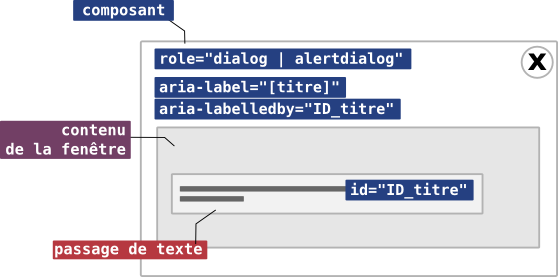
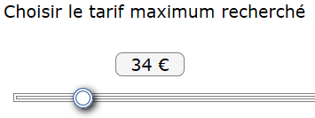

Fiche 6 : Motif de conception ARIA
Introduction - cas utilisateur
Afin de pouvoir accompagner les développeurs dans la conception de composants riches, ARIA propose des motifs de conception (design pattern en anglais) pour environ 39 composants prédéterminés.
À ces motifs de conception, s'ajoute un certain nombre de principes de conception par exemple pour la gestion du focus, etc.
Présentés dans un guide de développement, ces motifs de conception sont essentiels pour proposer des composants qui fonctionnent de manière homogène et prédictive pour les utilisateurs.
Les motifs de conception, particulièrement pour ce qui concerne la gestion au clavier, sont inspirés par le fonctionnement des interfaces logicielles.
Motif de conception ARIA
Un motif de conception est composé de deux volets : l'un va décrire la structure du composant, les rôles, propriétés et états à utiliser, le second décrit très précisément le comportement attendu du composant et l'ensemble des interactions au clavier qui doivent être implémentées.
Ces motifs de conception sont particulièrement importants car ils permettent aux navigateurs et aux technologies d'assistance de disposer de composants dont le comportement est prédictif. Tout ceci permet de s'assurer que les restitutions, et surtout la manipulation de ces composants par les utilisateurs, seront cohérentes.
Les motifs de conception sont liés à des rôles. Cela implique que l'utilisation de ces rôles respecte le modèle proposé.
Exemple : une fenêtre de dialogue
Implémentation des rôles, propriété et états ARIA
 Prenons par exemple un motif de conception simple lié au rôle dialog. Ce rôle permet de proposer un contenu sous la forme d'une fenêtre de dialogue qui peut être modale ou non modale.
La fenêtre de dialogue doit être présentée sous la forme d'un élément HTML unique et doit, comme tout composant interactif, être dotée d'un nom.
Le motif de conception dialog propose deux méthodes pour le nom. Elles s'appuient sur deux propriétés génériques que l'on retrouvera sur la majorité des composants :
aria-label qui permet de définir l'étiquette d'un objet ;aria-labelledby qui permet d'utiliser un passage de texte identifié comme étiquette du composant.
Voici deux manières d'implémenter le modèle proposé.
<div role="dialog" id="mymodale" aria-label="Connection">
[…]
</div>
<div role="dialog" id="mymodale" aria-labelledby="foo">
<h1 id="foo">Titre</h1>
[…]
</div>
Du point de vue de l'implémentation des propriétés ARIA, il n'y a rien d'autre à faire. Le rôle dialog signalera au lecteur d'écran qu'il s'agit d'une fenêtre de dialogue. NVDA le restituera par « Connexion dialogue » et JAWS par « Connexion, boite de dialogue » par exemple.
Comportement et gestion au clavier
Le comportement basique d'une fenêtre de dialogue est d'être affichée et fermée, rien de plus. Néanmoins, se pose immédiatement un problème : que faire de la position active de l'utilisateur (la position du focus) lorsqu'il va déclencher l'apparition de la fenêtre ?
Le motif de conception nous indique que le focus doit être donné sur le premier élément interactif capable de le recevoir dans la fenêtre. C'est extrêmement important puisque c'est cette prise de focus qui, en activant le composant, va déclencher la cascade de mise à jour jusqu'au lecteur d'écran pour qu'il puisse le restituer.
Notre modèle va donc être complété en insérant un bouton de fermeture et transférant le focus sur ce bouton à l'ouverture de la fenêtre.
<div role="dialog" id="mymodale" aria-labelledby="foo" tabindex="-1">
<h1 id="foo">Titre</h1>
<button id="close">Fermer</button>
[…]
</div>
À l'ouverture de la fenêtre, le focus sera transmis au bouton de fermeture, ce qui va déclencher la vocalisation de l'ensemble du contenu de la fenêtre par les lecteurs d'écran.
La question se pose maintenant de savoir quoi faire à la fermeture. Le modèle indique qu'il faudra simplement redonner le focus à l'élément qui a permis d'ouvrir la fenêtre. À la souris naturellement, mais également au clavier.
ARIA demande deux méthodes pour fermer une fenêtre :
- en activant le bouton de fermeture ;
- en appuyant sur la touche ESC.
Cela implique donc d'ajouter aux méthodes gérant les clics de souris :
- une méthode pour la touche ENTRÉE ;
- et une autre pour la touche ESC.
Note : il peut être utile de doter certains composants d'un attribut tabindex="-1", ce qui aura pour effet de pouvoir les manipuler avec la méthode JavaScript element.focus(). Cela sera utile pour surveiller que le focus est toujours capturé par la fenêtre.
Modale ou non modale
Une fenêtre modale est utilisée généralement lorsque l'on fait dépendre une action d'une opération réalisée par l'utilisateur. Ce sera le cas par exemple d'un formulaire de saisie de login ou encore d'une demande de confirmation affiché sous la forme d'une fenêtre.
Généralement, chaque fois qu'un contenu va être proposé sous la forme d'une fenêtre superposée au contenu principal, il s'agira d'une fenêtre modale.
Mais il peut y avoir des cas où un contenu proposé sous la forme d'une fenêtre ne requiert aucune action de l'utilisateur (par exemple un texte d'aide affiché lors de la saisie d'un formulaire). Bien que d'autres modèles de conception puissent être utilisés (comme le rôle tooltip ou alertcode>) si c'est le rôle dialog ou alertdialog qui est utilisé, on parlera d'une fenêtre non modale.
La différence de comportement est simple à comprendre. Une fenêtre modale doit impérativement « capturer » l'utilisateur qui ne doit pouvoir réagir qu'avec le contenu de la fenêtre tant qu'elle est affichée. Dans une fenêtre non modale, l'utilisateur est libre de poursuivre sa consultation indépendamment de l'affichage ou non de la fenêtre.
Comportement d'une fenêtre modale
Le dernier point concerne le fonctionnement de la fenêtre. Une fenêtre modale doit capturer les actions de l'utilisateur tant qu'elle est affichée, ce qui implique qu'il ne puisse pas naviguer ailleurs que dans la fenêtre. De plus, il faudra modifier le comportement de la tabulation. Tant que la fenêtre est active, l'utilisateur ne doit tabuler que dans les éléments tabulables de la fenêtre.
Lorsque la fenêtre n'est pas modale en revanche, il peut en sortir pour suivre un parcours de tabulation habituel.
Résumé
Ce modèle est assez simple et peut se résumer de la manière suivante :
- la fenêtre doit être implémentée sous la forme d'un élément englobant doté du rôle
dialog ;
- la fenêtre doit posséder un nom en utilisant
aria-label ou aria-labelledby ;
- à l'ouverture, le focus doit être transféré sur le premier élément qui peut recevoir le focus de tabulation ;
- à la fermeture, le focus doit être rendu à l'élément ayant permis d'ouvrir la fenêtre ;
- la fenêtre doit pouvoir se fermer avec la touche
ESC au moins ;
- si la fenêtre est une fenêtre modale :
- le focus doit être maintenu dans la modale ;
- la tabulation doit être circonscrite aux seuls éléments de la modale.
Conséquences sur le développement de composants riches
Les motifs de conception sont un outil très puissant qui vise essentiellement deux buts : uniformiser l'expérience utilisateur sur le Web pour l'utilisation des composants et développer de nouveaux modèles d'utilisation au clavier.
L'uniformisation du comportement des composants riches est un enjeu majeur du Web, particulièrement pour les applications. Il serait particulièrement compliqué pour les utilisateurs de manipuler ces composants s'ils devaient en réapprendre l'utilisation sur chaque nouveau site ou application.
L'enrichissement des interactions au clavier est tout aussi important dans le cas de composants complexes comme un système d'onglets, un calendrier ou un menu en accordéon. En effet la méthode basique de HTML, c'est-à-dire la tabulation, atteint très rapidement des limites qui rendraient l'utilisation de ces composants très laborieuse.
Interactions au clavier
Comme dit précédemment, une grande partie d'ARIA est inspirée par l'état de l'art du développement d'applications logicielles accessibles.
Le but visé est de tenter d'uniformiser l'expérience utilisateur afin que les composants complexes fonctionnent sensiblement de la même manière que les applications logicielles dont les utilisateurs ont l'habitude.
Les conséquences sur le développement sont particulièrement lourdes car cela nécessite d'implémenter de nombreux raccourcis clavier.
Sur un slider, le curseur devra être manipulable avec les flèches de direction. Il devra également fournir des raccourcis clavier pour atteindre le minimum et le maximum et un raccourci pour augmenter ou diminuer la valeur rapidement en utilisant un intervalle.
Dans des composants encore plus complexes comme un système d'onglets, c'est une dizaine de raccourcis clavier qu'il faudra implémenter.
 Conscient des difficultés que cela peut représenter, le RGAA a réduit l'exigence aux seules interactions de base indispensables qui mettent en jeux les touches : TAB, ESC, ESPACE, ENTER, et les touches de direction HAUT, BAS, DROITE, GAUCHE.
Cela ne veut pas dire qu'il ne faut pas implémenter les interactions au clavier riches proposées par les motifs de conception, au contraire.
L'implémentation des interactions au clavier change complètement la manière dont les utilisateurs vont naviguer et manipuler les composants. Par exemple, un principe générique est que les différentes parties d'un composant, quand elles ne sont pas constituées d'éléments interactifs, sont atteintes avec les touches de direction, ce qui sera le cas des panneaux d'un système d'onglets par exemple.
Ce bouleversement des interactions au clavier nécessite un temps d'appropriation par les utilisateurs qui poussent certains à vouloir ne pas les respecter et s'en tenir au développement de composants riches utilisables, en tout état de cause, avec la seule tabulation.
Il s'agit d'une grave erreur. Il est fondamental de respecter à la lettre ces modèles de navigation au clavier. Le RGAA impose, par ailleurs, que soit fournie une aide expliquant le fonctionnement des composants au clavier utilisés sur le site ou l'application Web.
Que faire quand il n'existe pas de motif de conception
Bien que très riche, et encore en cours de développement pour la version 1.1, l’API ARIA ne peut pas couvrir tous les cas possibles.
Lorsque vous développez un composant qui n'est pas référencé par le guide de développement, il faut, par vous même, trouver les bonnes propriétés à utiliser en puisant dans l'API ou en vous inspirant d'exemples déjà en production.
Zones affichées ou masquées
C'est le cas par exemple des zones qui peuvent s'afficher ou se masquer avec une action de l'utilisateur.
Structurellement, cela peut se présenter comme ça :
<button>en savoir plus</button>
<div>
[…]
</div>
Il faut alors déterminer les informations qui devront être remontées au lecteur d'écran pour lui permettre de restituer le fonctionnement correctement.
Ici, en l’absence de motif de conception, aucun rôle n'est à utiliser. En revanche, dans tous les cas, l'utilisateur aura besoin de savoir si la zone est affichée ou masquée et, éventuellement, de savoir de quelle zone il s'agit.
Il y a plusieurs manières de transmettre ces informations. La plus simple est d'utiliser la propriété aria-expanded qui indiquera que la zone est affichée ou masquée. Cette propriété peut être indifféremment positionnée sur la zone ou le bouton lui-même, mais il s'avère que l'implémenter sur le bouton semble plus efficace.
Il peut être intéressant également de signaler au lecteur d'écran la relation qui existe entre le bouton et la zone contrôlée. ARIA propose la propriété aria-controls à cet effet.
Voilà l'implémentation basique de ce genre de dispositif :
<button aria-expanded="false" aria-controls="foo">en savoir plus sur l'API ARIA</button>
<div id="foo">
[…]
</div>
Avec JavaScript, il suffira de changer la valeur d'état aria-expanded pour signaler le statut de la zone contrôlée. Avec NVDA, cela sera vocalisé par « En savoir plus sur l'API ARIA, bouton, réduit » et « développé » au moment de l'action.
Garantir l'accessibilité des composants riches
Mais cela ne vous garantit pas que ce composant soit réellement accessible, c'est-à-dire qu'un aveugle, utilisateur de lecteur d'écran, sera en mesure de le manipuler et d'en comprendre le fonctionnement.
Comme pour tous les composants, qu'ils soient ou non encadrés par un motif de conception ARIA, il va falloir le tester en restitution sur les lecteurs d'écran et avec les systèmes d'exploitation qui vont être utilisés en production.
C'est la seule manière de garantir que les composants développés avec JavaScript et ARIA seront réellement accessibles à tous.